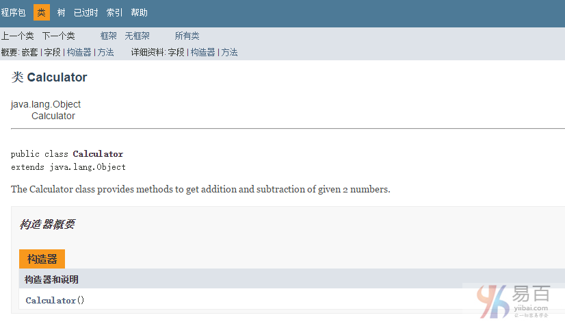

☰ 目录
17 注释
java注释是不会被编译器和解释器执行的语句。 注释可以用于提供关于变量，方法，类或任何语句的信息或解释。 它也可以用于在特定时间隐藏程序代码。
Java注释的类型
在Java中有3种类型的注释。它们分别如下 -
- 单行注释
- 多行注释
- 文档注释
1)Java单行注释
单行注释仅用于注释一行，它使用的是 // 两个字符作为一行注释的开始，如下语法所示 -
语法：
// This is single line comment
示例：
public class CommentExample1 {
public static void main(String[] args) {
int i = 10;// Here, i is a variable
System.out.println(i);
int j = 20;
// System.out.println(j); 这是另一行注释，这行代码不会被执行。
}
}
上面示例代码输出结果如下 -
10
2)Java多行注释
多行注释用于注释多行代码。它以 /* 开始，并以 */ 结束，在 /* 和 */之间的代码块就是一个注释块，其中的代码是不会这被执行的。
语法：
/*
This
is
multi line
comment
*/
示例：
public class CommentExample2 {
public static void main(String[] args) {
/*
* Let's declare and print variable in java.
*
* 这是多行注释
*/
int i = 10;
System.out.println(i);
}
}
上面示例代码输出结果如下 -
10
3)Java文档注释
文档注释用于创建文档API。 要创建文档API，需要使用javadoc工具。
语法：
/**
This
is
documentation
comment
*/
示例：
/**
* The Calculator class provides methods to get addition and subtraction of
* given 2 numbers.
*/
public class Calculator {
/** The add() method returns addition of given numbers. */
public static int add(int a, int b) {
return a + b;
}
/** The sub() method returns subtraction of given numbers. */
public static int sub(int a, int b) {
return a - b;
}
}
用intellij 的 Tools —> Generate JavaDoc 即可。
通过javac工具编译：
javac Calculator.java
通过javadoc工具创建文档API：
javadoc Calculator.java
现在，将在当前目录中为上面的Calculator类创建了HTML文件。 打开HTML文件，并查看通过文档注释提供的Calculator类的说明。如下所示 -
